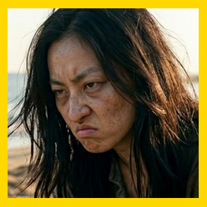

MagaSakura
La Erudita de lo Arcano • Maga Kunita (Evocación y Secretos)
"El conocimiento no es peligroso; ignorar sus consecuencias sí lo es."
1. Hitos Decisivos de Sakura
Cuando una jauría de ratas gigantes acorraló a Ainur, lanzó su primer conjuro mayor de Dormir, neutralizando a todas las bestias en un parpadeo.
Enfrentó al peligroso nigromante de los callejones, le abrió una herida en la frente en forma de "tercer ojo" y recuperó su grimorio de magia prohibida.
Descifró las pistas de la máscara de bronce en la torre de Zenopus para encontrar el manuscrito secreto que reveló las aguas de Kanatsu-mi para salvar a Glunt.
El Enigma del Ojo de J'karaa
En la Sesión XVI en Thurmaster, Ainur te entregó el colgante al cuello. **Tauster y Jelenneth reconocieron la escritura como thalanoriana ancestral**.
El colgante es una llave para una tumba o cámara sellada milenaria. Los nigromantes de Thir y sectarios lo buscan con desesperación. Eres la única mente con suficiente Inteligencia (18) y Sabiduría (18) para desentrañar sus secretos sin ser corrompida.
2. Vínculos con los Koonies y Aliados
3. Consejos de Roleplay y Combate
En Combate: Tus tiradas de salvación contra magia son las mejores de todo el grupo (Varas 11, Conjuros 12). Con Constitución 17 tienes 8 PG, permitiéndote aguantar más que cualquier mago ordinario. Mantén distancia y usa proyectiles mágicos y control de masas.
En Roleplay: Fría, incisiva, analítica. Tu Carisma 6 refleja que no te importan las cortesías ni la burocracia de Thir; solo la verdad detrás de las ruinas y la protección de los supervivientes.